Voici une liste exhaustive des personnes présent dans l'aventure HL² :
 Personnages Alliés : Personnages Alliés :
Gordon Freeman
Après avoir été un simple scientifique dans le laboratoire des matériaux anormaux du centre de BLACK-MESA, le voici maintenant dans la peau d'un vrai Rambo. Revoilà de retour notre héros qui a par le passé lutté pour survivre " l' accident " BLACK MESA , quinze ans après. Sous des ordres de son nouvel employeur, le G-Man vous prenez de nouveau le contrôle de Freeman pour plus d'action et de gameplay rempli de suspens.
Le G-Man
Est-il ami? Est-il ennemi? Personne ne le sait. Nous avons déjà rencontré ce personne ( invincible ) dans HL 1, surtout à la fin de la du jeu où il a donné à Gordon une occasion de travailler pour lui ou de faire face à une bataille qui mènerait à certaine mort; Half-Life2 suppose que vous avez décidé de le joindre. Ce personnage est surement l'énigme la plus intense de la sage Half Life.
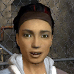Alyx
Elle prend le rôle de l'associé de Freemans dans Half-Life 2. Elle est la fille d'Eli Vance, un des scientifiques que Gordon a rencontré dans la première aventure. Elle a créé un ami pour elle-même, un robot qu'elle appelle 'Chien' . Futé, capable et entraîné, Alyx est certainement quelqu'un que vous devriez être heureux d'avoir à votre côté.
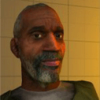Eli Vance
Un de vos camarades de scientifiques ont survécu à la tragédie de BLACK-MESA. Maintenant, comme Freeman, il est entraîner au combat et à la survie. Comme sa fille Eli, il est disposé à vous aider autant que possible.
Dr. Kleiner
Un autre scientifique que vous avez rencontré dans vos voyages et qui a aussi survécu BLACK-MEASE. À la différence d'Eli Vance, il s'avère que Kleiner a collé strictement à la science et est toujours le chercheur de gémissement que nous sommes venus pour connaître dans le jeu original.
Barney Calhoun
Il est de retour pour un round.Ce n'est pas vraiment le plus futé des agents de sécurité mais il était un personnage important du jeu original que nous avions l'habitude de mener dans les entrailles de la mort. La popularité de barney vient surtout de l'addon BlueShift.
Chien
Rien n'est connu au sujet de Chien sauf que c'est un robot construit par Alyx, et que ce n'est pas réellement un chien ;-) .
Ennemis
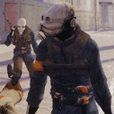Le Combine
On ne connait presque rien à propos du 'combine'. La rumeur dit qu'ils sont moitié alien, moitié humain qui est la raison du nom. De sûr, ils se trouvent dans la ville City 17 et ils n'aiment pas Gordon Freeman.
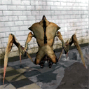L'AntLion
Juste un des nouveaux alien qui nous embêterra à travers vos voyages à City17. Bien qu'il soit un ennemi mortel, avec l'utilisation des phéromones étrangers vous pourrez duper ces bêtes en vous faisant passer pour l'une d'entre-elles et les vous en servir alors pour attaquer vos autres ennemis dans le jeu.
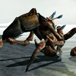La Garde d'AntLion
Trois fois plus grand et trois fois plus fort que sont petit frère, aporchez vous trop de près d'un de ces aliens et vous vous retrouverez en l'air ! Évitez à tout prix le contact avec ces bêtes !
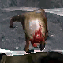Le Headcrab
Très probablement un des aliens les plus ennuyants pourtant les plus amusants du jeu original. Bien que petit, le headcrab cache un saut mortel et une fois combiné en se verrouillant avec succès sur une victime, il a la capacité de la transformer en zombi.
 Le Zombi Le Zombi
C'est le résultat d'une attaque réussie de headcrab. Ils ont quelques plus comme la capacité de ramper une fois qu'ils ont perdu leurs jambes ou encore la possibilité que le headcrab se détache une fois le corps trop endommagés.
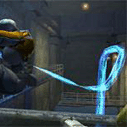L' Hydra
On ne s'est pas trop ce qu'est cette créature mais l' Hydra semble être un alien qui attaque n'importe quoi, humain, étranger ou robotique.
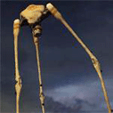Le Strider
Un engin colossal armé d'un canon laser et de jambes énormes qui peuvent empaler des personnes. Ce monstre de 15 mètres est très puissant et très futé. Regardez en l'air de temps en temps pour ne pas avoir de surprises !
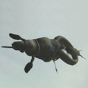Le Gunship Alien
Rapide et tuer, une combinaison mortelle et volante de surcroit. Quand un de ces derniers vous prend en chasse, le seul conseil possible est de courrir très vite.
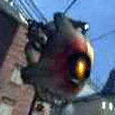Modules Scanner
Ces choses volent autour de City17 et agissent en tant que caméra de détection mobile. Si vous êtes repérés par un Scanner, des soldats viendront surement vous embêttez alors essayez de les éviter.
 Man Hacks : Man Hacks :
Cet ennemie à l'air d'être un robot basic de surveillance de City 17.
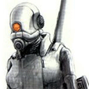Assassiness
Ces femmes Assasins étaient déjà présentent dans Half Life 1 et elles étaint très chiantes à tuer : Rapide et futives étaient leurs principaux atouts.
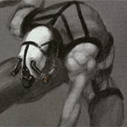Le Rôdeur
Aucun détail n'est connu au sujet de ce caractère.
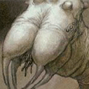Créature
Aucun détail n'est connu au sujet de cette créature.
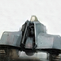Tank
Un intéressant tank de sci-fi . La possibilité que vous pourriez pouvoir le commandet est à envisager.
|